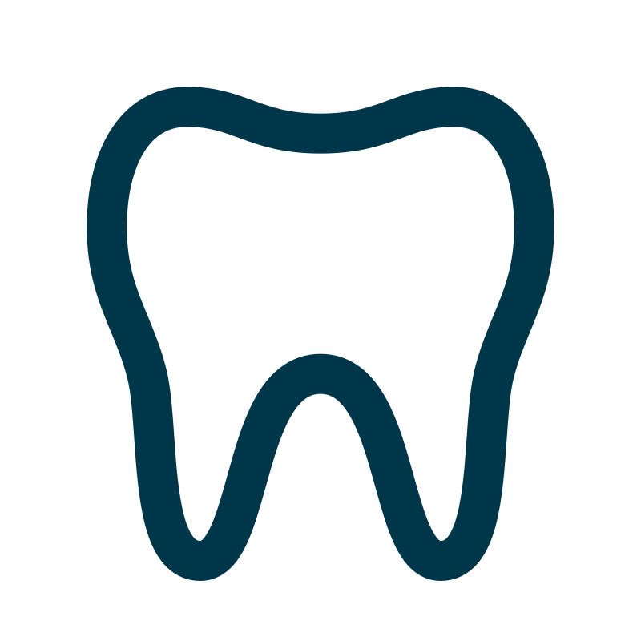
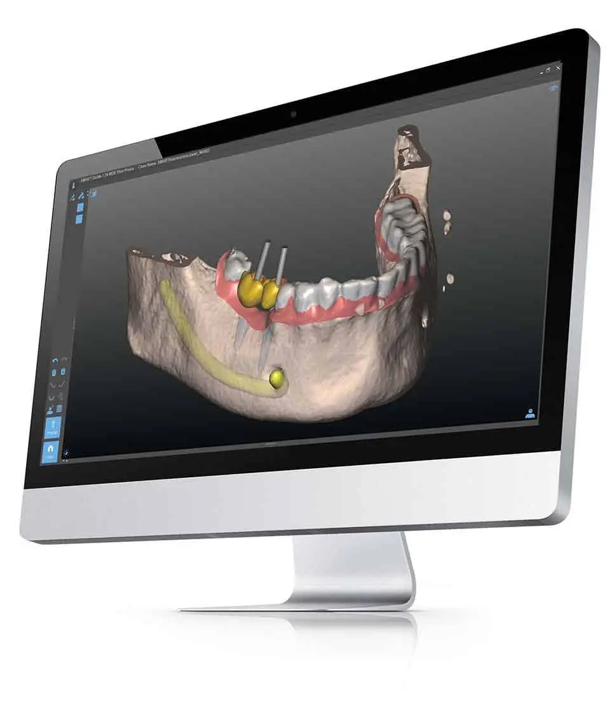
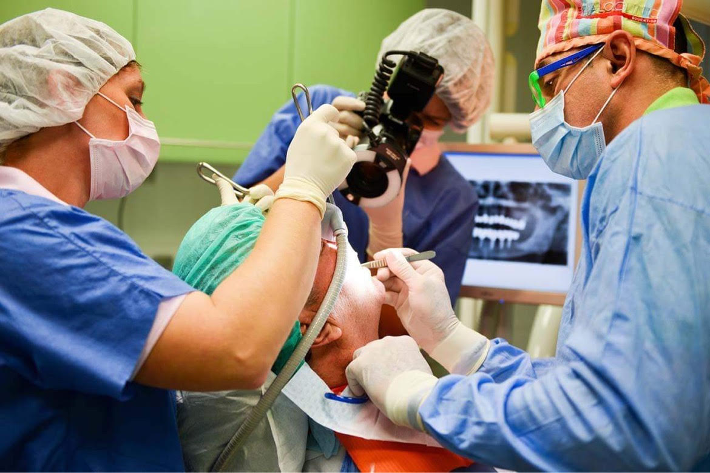
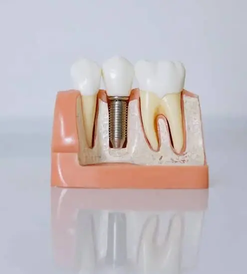
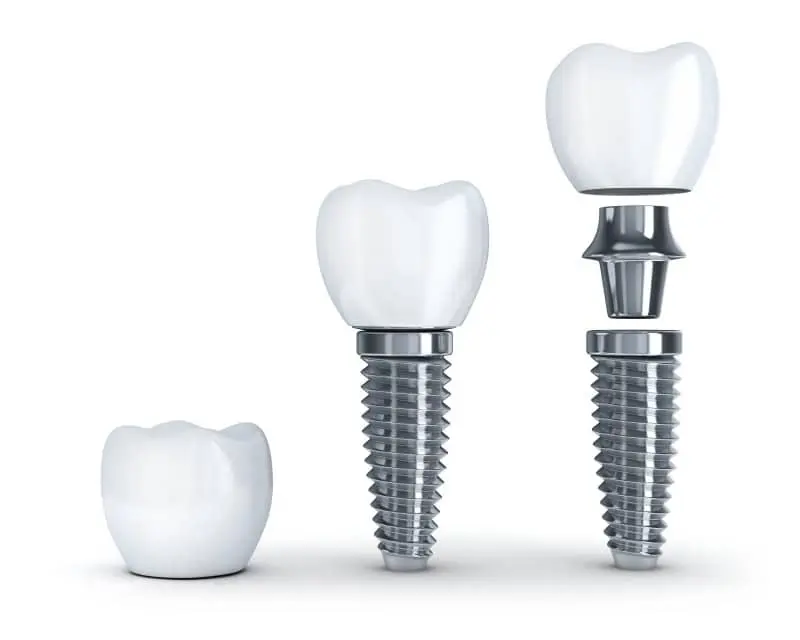

Everything we do happens in our dental clinic. During your first visit, we will take an x-ray and a CT of you. The doctor will then give you a detailed treatment plan.
Based on a patient's condition, the following treatments can be used:
Solo Implant Dental Implant:
In such cases, when only one or two teeth are missing, it is not necessary to prepare a bridge with grinding healthy teeth.
Implant Bridge Dental implant:
In case of missing a molar, instead of removable partial denture it is possible to prepare a fixed substitution, that is a bridge, which is more comfortable and easier to handle than the removable substitution.
ALL ON 4, ALL ON 6:
The All-on-4/6 treatment concept was developed to provide edentulous patients with an efficient and effective restoration using only four implants to support an immediately loaded full-arch prosthesis.
OVERDENTURE:
An overdenture is a denture prothesis supported by implants, so they remain stable and in place. It offers a natural smile that allows you to comfortably eat, laugh and smile without the worry of the denture moving around. An overdenture can ultimately improve a person's quality of life by acting as natural teeth.
After the following recovery phase the dental prosthesis gets to its place, which now is going to be as strong and usable as a healthy tooth. The safe and refined operative process, which has now become a routine, the modern equipment and the experience of several years offer a nearly 100 percent of safety to the success of implanting teeth.
SMART GUIDE
Computerized treatment planning and guided implant placement
THE KEY FOR A SUCCESSFUL RESTORATION
According to the clear opinions of dental professionals, one of the main effects of long-term success of dental implantation is the correct three-dimensional position of the implant.
Positioning dental implants is an operation requiring extreme patience and precision from the dentist. It is particularly important to have the implant in the best position both esthetically and anatomically for optimal bone healing.

HOW DOES IT HAPPEN?
The most advanced solution for teeth replacement.
In this clinic you have the possibility to ask for 3D planning and guided implant treatment with the latest technology.
SMART GUIDE
Smart Guide is a high-end digital solution for your dentist to perform the perfect plan and positioning of your implant. The dentist can digitally plan your case ahead on a computer in relaxed circumstances.
GUIDED SURGERY
According to an aesthetically and anatomically correct plan, a patient-specific surgical guide ensures to have the implants in the perfect position.
ADVANTAGES OF SMART GUIDE TECHNOLOGY
Modern diagnostics
The treatment starts with high quality 3D imagining
Unwished risks and complications of free-hand dental implantation can be reduced with precise
planning and its accurate realization.
Shorter surgical time
Due to the advanced preparations and the patient-specific surgical guide the chair-time can be
reduced to a fraction.
Less pain and inconvenience
Guided surgery gives the possibility for a treatment as minimally invasive as possible. In many cases
it means no sutures and less pain.
No additional procedures
With seeing and using most of the given anatomy, expensive and risky procedures can be avoided in
most cases.
All together SMART Guide offers a precise, estimable and safe treatment with minimizing the inconveniences
of the surgery.

THE TREATMENT PROCESS WITH SMART GUIDE
Consultation
Your dental professional informs you about the details of the treatment.
3D diagnostics
A CT image is made from your anatomical structures at the area of the missing teeth in order to visualize
the bone and the gum. The imaging is completely painless and takes only a few seconds.
Computerized treatment planning
The dentist plans your treatment in a relaxed environment. Thanks to the cutting-edge software, it is
possible to plan the perfect shape, size and position of the bone, and considering the surrounding anatomical
structures such as the nerve or sinuses.
Implant placement
The surgery is performed through an individual surgical guide. The guide guarantees the implants to be placed
in their planned position, and it also ensures the least inconvenient treatment possible.
Prosthetic restoration
Your dentist can prepare the ideal prosthetic work on your implants, thanks to their perfect position.

Bone grafting
After extracting a tooth there is bone loss around the roots. It heals, but if they do not insert an implant into the missing tooth's place, the bone starts to recede. After a decay or so, the bone level becomes much lower than in the other parts of the mouth. If there are more teeth missing, the bone recession is bigger. If a patient is wearing a denture, the bone loss is even bigger, especially if he wears a metal-based denture. For placing an implant into the bone we need a definite height and width of the bone. If it is week, it cannot keep the implants in, or we can hurt important nerves and vessels which are laying in the bone. We are able to improve the quality of the bone with different methods.
SINUS LIFT OPERATION WITH USING ARTIFICIAL BONE GRAFTING MATERIAL:
This is an operation with which we are able to reinforce the bone in the upper molar region. After opening the bottom wall of the sinus cavern, the surgeon puts in there a special granulated artificial bone. It is also possible to put in there the implants too at the same time. If the bone is even weaker in the upper molar region the patient needs a bigger operation to make the bone fit for implantation.
BONE BLOCK OPERATION WITH RETROMOLAR BONE BLOCK:
We do these operations at our clinic. There is an anaesthetist doctor who makes general anaesthesia for the patient. During the operation the doctor takes out bone fragments from the vertical part of the mandible and replaces them to the horizontal part of the mandible. This operation usually works when the patient needs more bone at the bottom region.
Implantation
Dental implantology is a special field of dentistry that uses dental prosthesis as a method to replace tooth gaps. The aim is always the successful dental rehabilitation of the patients. During the implantation inorganic materials are implanted into the tissues of the jawbone. The implanted teeth in their own or as a fixed basement can substitute the patient's single or multiple tooth gaps.
WHY IS IT GOOD?
Permanent toothlessness, chewing with gum damages the subjacent bone-tissue with the constant pressing, thus stimulates bone-absorption. Not even dental plates hinder this harmful process. The time between losing teeth and the implantation is a very important factor for patients having tooth gap, because the available bone structure determines its success. Toothlessness renders nutrition, we cannot chew well, and damages the whole organism. Adverse alterations, declining processes arise in jawbones and joints: the height of jawbones decreases the face collapses, the wrinkles deepen. Teeth look for the contact with their chewing-pairs and the neighbouring teeth. So if for example our lower sixth tooth is missing, the sixth above it slowly but surely rises from the tooth-bed, and in long term we may loose another tooth. Since misfortune never comes alone, the seventh tooth behind the missing sixth topples forward. It is obvious how important it is to insist on our teeth, but if it has to be extracted, replace it as soon as possible. The implant is made of titanium, which has an advantageous feature, it prevents bone-decline.
Surverying the state
The implanting doctor first of all inquires about the patient's general state of health and his claims. An exact plaster impression and a panorama X-ray photograph are taken of the planned place. The required oral hygiene, the good state of health and the appropriate jawbone structure, where the implant has to be planted are essential for implanting teeth. With the help of these the anatomical conditions can be appreciated, with the consideration of the available bone structure and patterns the best shape and size for the implant can be chosen.

During the discussion the patient is informed about the results of the examinations, the suggestions, the timetable of the treatments to do, the possible risk factors and their prevention. The patient is also informed about the possibilities, how many implants he can wear, what he has to do before and after the operation. The final plan is drawn up together with the patient. By following the doctor's directions and due to the careful planning and the excellent operative technique, the risk of pushing out is minimal and can happen only extremely rarely.
Operation
Implanting implants surgically usually happens with local anaesthesia. We apply medicinal pre-treatment, dinitrogen-oxide dazing if necessary. During the implantation, after being prepared to the operation, the soft parts covering the jawbone are carefully separated and the place of the implant is formed in the bone. Preparing threads provides the adequate fixing, for example in case of screw-implant. This is followed by inserting and closing the implant, then closing the wound.
A week after the operation the stitches are taken out, the implants can recover tranquilly in the bone, under the protection of the mucous membrane. The wound closed during the operation provides sterile environment to the untroubled recovery of the bone tissue around the implant, under the gum. The recovery of the bone generally lasts three months in the lower jawbone, and six months in the upper. After that, in the second phase, the implant is released from the mucous membrane and a recovery-screw is put into it, which is later going to be the carrier of the implant-head in the buccal cavity. It is possible to wear a temporary implant during the recovery if desired.
After the necessary relieving time, the crowns of the implants get into their place. After a short time, an impression is taken. The dental technician uses it to prepare a sample for the tooth substitution. Inserting the tooth is the dentist's task.
About Titanium
Materials used for implanting have to meet very strict requirements. They have to be compatible with living tissues, must not have poisonous, allergic or malignant effects and must not corrode. They have to have the required flexibility, tensile strength, capacity and abrassion-proofness. They have to be well sterilizable and easy to work with. A part of the available materials is made of metal or alloy, such as titanium. Due to its external oxide layer it is quite stable and it has a high external energy, so it is able to join with different molecules and proteins, with which the protein-structures of the bone tissue later can join. That is how osseous fixing of the implant happens. Besides the ones mentioned above, its greatest advantage is that it prevents decay of bones, which is unavoidable after loosing a tooth.

What can you expect?
Implantation is a surgical intervention. In case of anxiety it can be eased with sedative-relaxing medicines and can be painless with the use of anaesthesia. Implanting one or two implants has the same encumbrance as tooth extraction. In case of implanting more implants at the same time or if the patient is strongly anxious, there are other possibilities. Treating and easing the anxious patients' unpleasantness becomes more and more important.
According to a survey carried out by the Institution of German Dentists, 75 percent of the interviewed admitted that they have little or medium fear preceding dental treatments. 15 percent admitted great fear. The interviewed also admitted that besides the well-known syndromes (shivering, intense heartbeat, perspiration waves), they are afraid of getting into panic, having great pains; loosing self-control, nauseating or possibly fainting, especially at the dentist.
Many people feel ashamed of their bad teeth so much that their self-confidence, which is already small because of the awkward situation, even more decreases. Thus laughing or socialising is impossible for them. It is very hard if not impossible for the patient to get out of this vicious circle alone. It is even harder, since it is still a taboo in public. We try to help you. The first treatment happens after giving special advice.
Checking
Inserting the implanted tooth substitute in the mouth does not put an end to the relation between patient and doctor. One of the most important conditions of the success of implanted tooth substitution is to keep the mouth clean, the adequate oral hygiene and the regular dental checking. The patient has to come to a control-examination usually once a year. Then we make sure that the implant fits to its new place.
All about anaesthesia
Dinitrogen-oxide, Laughing gas sedation
It is a revival of an old method, since dinitrogen-oxide is used for sedation in various fields of medical science for the 19th century. The situation is the same with dentistry. It is recommended mainly to anxious patients, since besides being an analgesic, dinitrogen-oxide dissolves fear. In the US and in many other countries, such as Britain, Australia and the Scandinavian countries more than 50 percent of the dentists use dinitrogen-oxide during treatments.
How does dinitrogen-oxide work?
Even a small amount of dinitrogen-oxide breathed in through a small nose-mask has a considerable effect. The sense of relief and the decreasing of anxiousness create an easy state of trance, during which the patient is conscious and is able to communicate with his doctor and answer questions, gargle, etc. His swallow-reflex remains, so he cannot swallow aside. He should not be afraid of such delusions; side effects will not appear. The sense of safeness replaces fear and anxiety, which may be increased with a relaxing music through earphones. This state is called pleasure-hypnosis. Together with fear, pain is also gone, thus the analgesic injection cannot cause any trouble to the patient. At the first time we apply the smallest possible quantity of medicine, which surely has a sedative effect. Then we gradually increase the dose until reaching complete painlessness. Dosing depends on the patient's ability of suffering pain; if he feels pain during the treatment, he can get anaesthetic injection any time he asks for it, since the doctor is able to control the mixture of oxygen and dinitrogen-oxide at any time. After the treatment the patient breathes in pure oxygen for five more minutes, until the effect of dinitrogen-oxide is gone. Thus the patient can leave the surgery safely after the treatment.
Medicinal pre-treatment
Preparing patients with medicines means psychical calming and fear-dissolving. With the help of these, the undesirable subconscious negative feelings can be decreased before treatments.
When do we apply it?
We apply it in such cases when we have to deal with an anxious patient, especially if strong retching and nausea are expected. It is also used in case of such patients who have already had or are susceptible to different diseases (heart and circulatory-troubles), or if their limited co-operative ability requires it.
Local anaesthesia
Local anaesthesia allows us to execute examinations and treatments without pain, while the patient is absolutely conscious. Local anaesthesia hinders the expansion of pain stimuli; it palliates and dissolves sensitivity to pain, temperature and touch, for a certain time.
Field of applying:
It is applied in case of small and medium interventions of the mouth, teeth, jaw and face, acute, chronic pain and painful, diagnostic interventions.
Sedo analgesia
With the injection of analgesics, sedative medicines through the vein, we are able to cut off the patient's pain-centre, thus we create a calm and sleepy state. Then we can avoid the creation of fears, but we can protect the heart, the encumbrance and the lungs from physical stress, which may be caused by angst and anxiety. The patient is absolutely conscious and breathes alone during the treatment. In order to reach total painlessness, we apply local anaesthetic.
When do we apply it?
We apply it in such cases when the patient is extremely timid, anxious or his previous diseases (heart and circulatory troubles) would be physically stress.